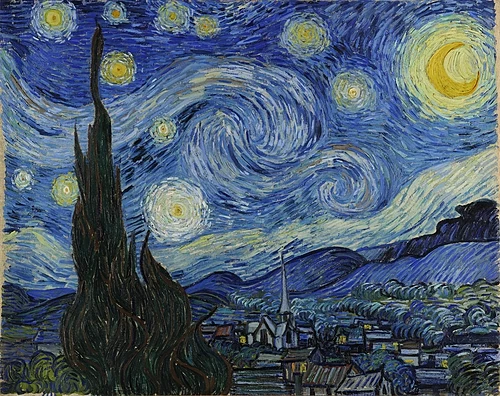
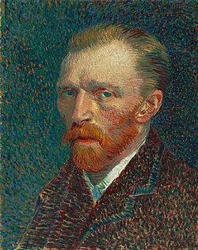

« Il faut gâcher autant de toiles que l'on en réussit. »



Bienvenue à l'exposition événement consacrée à Vincent van Gogh, figure majeure du postimpressionnisme. À travers un parcours visuel fascinant, redécouvrez l'évolution de son œuvre, de ses premiers croquis hollandais aux éclats vibrants de ses chefs-d'œuvre provençaux. Cette rétrospective vous invite à plonger au cœur de son génie créatif en admirant la texture unique de ses toiles emblématiques. Une expérience culturelle profondément émouvante qui célèbre le pouvoir de la couleur et de la lumière.
À propos de l'artiste

Vincent van Gogh (1853–1890) était un peintre néerlandais onsidéré aujourd'hui comme l'une des figures les plus importantes de l'histoire de l'art. Au cours de sa vie, il a réalisé plus de 2 000 œuvres, dont environ 900 peintures. Pourtant, il n'a vendu que très peu de tableaux de son vivant. Son œuvre est aujourd'hui admirée dans le monde entier pour ses couleurs intenses, ses coups de pinceau expressifs et la profonde émotion qu'elle transmet. Van Gogh s'inspire souvent de paysages, de scènes de la vie quotidienne et de portraits. Parmi ses œuvres les plus célèbres figurent La Nuit étoilée, Les Tournesols et La Chambre à coucher. À travers la couleur et le mouvement, il transforme des scènes ordinaires en images pleines de vie et d'émotion. Malgré une vie marquée par des difficultés personnelles, Van Gogh a continué à peindre avec une grande passion. Son travail a profondément influencé l'art moderne, notamment le mouvement de Expressionnisme. Aujourd'hui, il est reconnu comme l'un des artistes les plus importants et les plus émouvants de l'histoire de l'art.